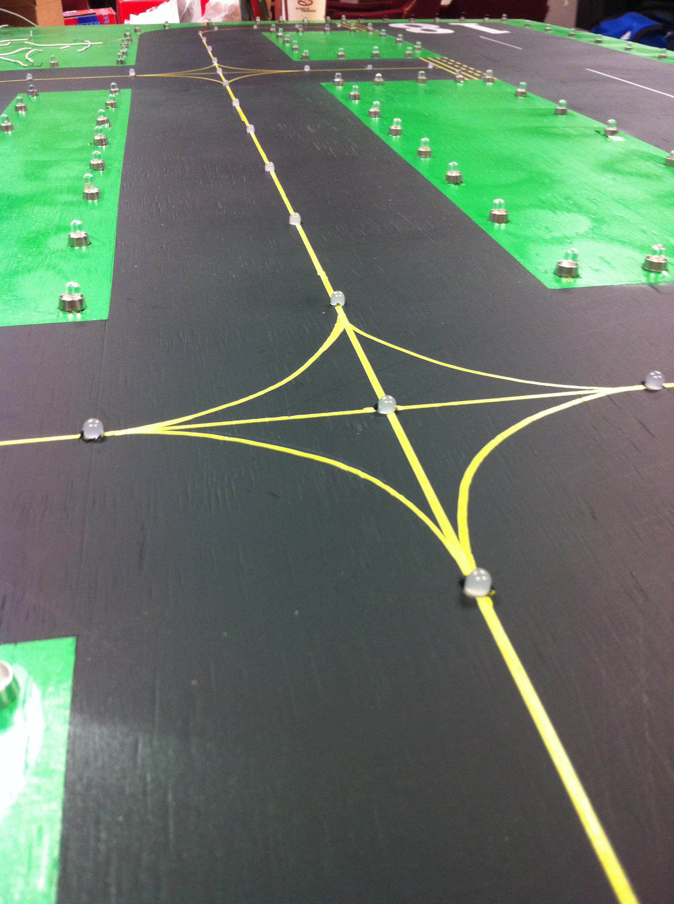

Hi, My name Chris.
I am a Software Tester
I perform functional and regression tests to find defects in code. I create automated tests in Cucumber and SoapUI.
I am a Software Developer
I program in Java, C, C++, and Python. I am currently teaching myself HTML, CSS, and JavaScript by working on projects like this website.
Associate QA Analyst Consultant at Entech
November 2015 - Now
I work on-site at Barclays Bank where I am a member of a Scrum team with half the members in Pune, India. I perform functional, integration, and regression tests on on back-end APIs for the Barclaycard US website, mobile apps, and Customer Care Desktop (CCD). APIs I have tested dealt mostly with authentication such as one time passcode, RSA & Verid challenge questions, and user login.
- Testing tools: SoapUI, ReadyAPI!
- Test and Defect Management: HP Application Lifecycle Management (HP ALM)
- Manage Incidents: Unicenter, ServiceNow
- Databases: Oracle 11g
- Other: Agile, Subversion (SVN) using TortoiseSVN
Education:
West Virginia University, Dec. 2013 B.S. Computer Engineering B.S. Computer ScienceCheck out my 
Basic Relational Database in Java
A semester long project for my CS210 class where I created a relational database in Java. It uses a command line interface to read in statements and Regex to match them to commands. I saved inserted rows into a table object which I then stored in a hash map. I implemented serialization by saving the DB schema to an XML file and all table data to binary files.
Automated Taxi Advisory System
My senior design project where I worked on a team to create a system that uses taxiway lighting to help pilots and air traffic controllers prevent taxiway incursions. I created a GUI in python using WxWidgets. I programmed an Arduino microcontroller to control the LEDs and RFID reader on a model airport my team built. RFID tags were taped to RC cars (we couldn't find any RC planes small enough) which the Arduino will detect on the model and display on a map in the GUI.
Check out the project web page
ZIL Compiler
My Compiler Construction term project for where I created a compiler for a subset of the Zork Implementation Language (ZIL) used to build interactive fiction games. I used C with FLEX and BISON to create the compiler. It reads in ZIL code to create rooms, characters, and items for a game. The player can then play this game in a command line interface.
Computer Graphics Term Project
I created a scene using OpenGL and C++ depicting a family home in rural West Virginia. It includes a house and shed whose doors and windows can be interacted with. There's a truck which the user can drive around. The user can use a keyboard and mouse to zoom in and out or pan around the scene.
Contact Me
celanham1@gmail.com (240)-682-3506
About Me
I am from Waldorf, MD, but currently live and work in Wilmington, DE. On my off time I like to play video games, read comics, watch Netflix, and go to concerts.